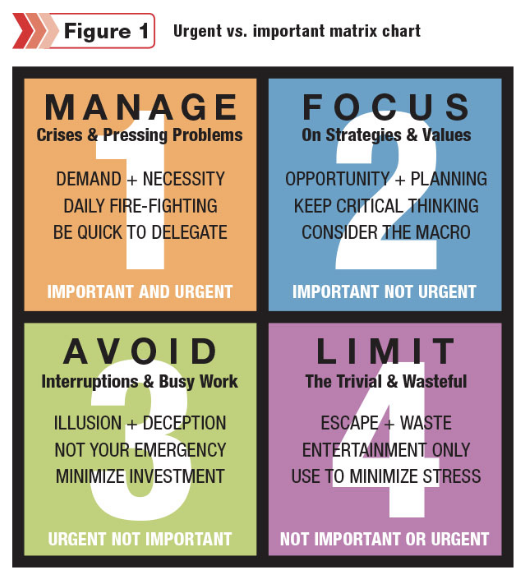

For many successful people an intense focus on the most important thing of the day is a superpower. What do we mean? It’s easy for life to get overwhelming. We are all so busy, time constrained, but what are we accomplishing? People who are able to cut through the noise and focus on the most important have a huge advantage over the rest of us.
The idea of the daily 1 thing came from Gary Keller in his book "The 1 thing." The concept is to concentrate your day on the one thing that will make everything else easier or unimportant.
The 1 thing is a simplified version of Dr. Steven Covey’s urgent and important matrix. In Covey’s work he talks about all of our daily activities fitting into a 2 x 2 matrix, Urgent and important are the axis’.
Tip:Write down all of your activities in a 24 hour period and put them in 1 of the 4 boxes.
Action:Keep prioritizing until you find the 1 most important thing for the day. Do that most important thing first and try not to work on anything else until that activity is completed.
Note: At first this is going to be difficult. Stick with it. It’s ok to make mistakes. You will get better with practice.